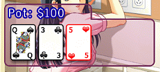

14 |
Game Interface |
 |
|
The Cursor:
The hand cursor indicates where you can select icons. The Information Area: In Texas Hold'em Poker: In the top-left corner of the screen, you can find your stack and your bet amount. The pot for this hand is displayed in the translucent box. In the top-right corner of the screen, you can find your opponent's stack and her bet amount. The Dealer icon identifies the dealer for this hand.  The Flop cards, Turn card, River card and Pot amount are displayed in the translucent box. You can also use the cursor to hover over this box and press and hold  to move it where you want on the screen. to move it where you want on the screen.In Blackjack: In the top-left corner of the screen, you can find your stack and the pot amount for this hand. In the top-right corner of the screen, you can find the objective which must be met if you want to remove another article of clothing from the girl.
Below the next objective amount, there is a gauge showing how close you are to getting the girl to remove another piece of clothing. |


 |
 |
 |